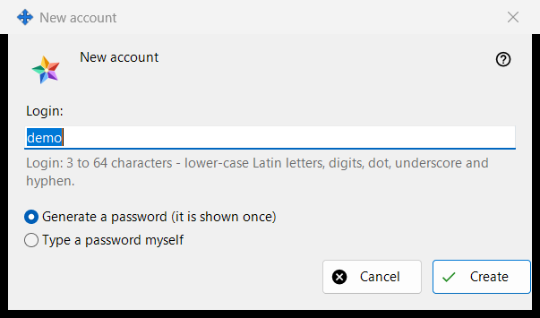
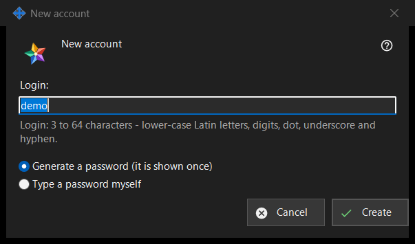

New account
What this is for
One window in two modes. 'New account' adds an account to the Media Exchange Server you run; 'Reset password: <login>' gives an existing account a new password. They open from 'Add an account..' and 'Reset password..' under the account list on the Media Exchange Server page of the Share Manager settings; Reset needs an account selected.


In this order
- In Add mode type the login.
- Choose how the password is made.
- In Reset mode decide whether every device of the account is signed out.
- Press 'Create' or 'Reset'.
- Copy the generated password from the next window, or type your own.
The elements
Statement for the first account
At the very first account the window starts with 'Before you create the first account, read what the operator of the server can see:' and a read-only box with the statement. Later accounts and resets do not show it.
Login
Add mode only. 3 to 64 characters: lower-case Latin letters, digits, dot, underscore and hyphen; capitals are folded to lower case. The hint turns to the warning colour while the text cannot be a login, and 'Create' does not go on until it can.
How the password is made
'Generate a password (it is shown once)' is the default: the program makes a random password that meets the rules and the next window shows it a single time. 'Type a password myself' opens the 'Account password' window, where a live line names what is missing: at least 10 characters with an upper-case and a lower-case Latin letter and a digit.
Sign out every device
Reset mode only. 'Also sign out every device of this account right away' is ticked by default. The result line then reports that the password is changed and all the devices of the account are signed out; without the tick it reports only that the password is changed.
After the server accepts
The result line reports that the account is created. A generated password appears once in its own window with 'Copy password' and 'Set my own password..', which returns to Reset on the typed choice. With 'Keep account passwords on this PC' on, the password is also stored on this PC and the account gets 'Show password..'. If this build offers the exchange client features and this PC has no account of its own, it is signed in as the account's first device with this password.
Manager settings · SFTP sharing settings · Exchange server settings